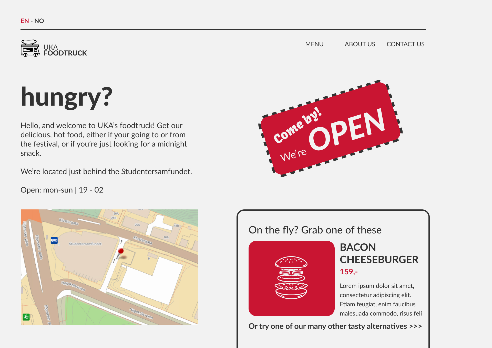
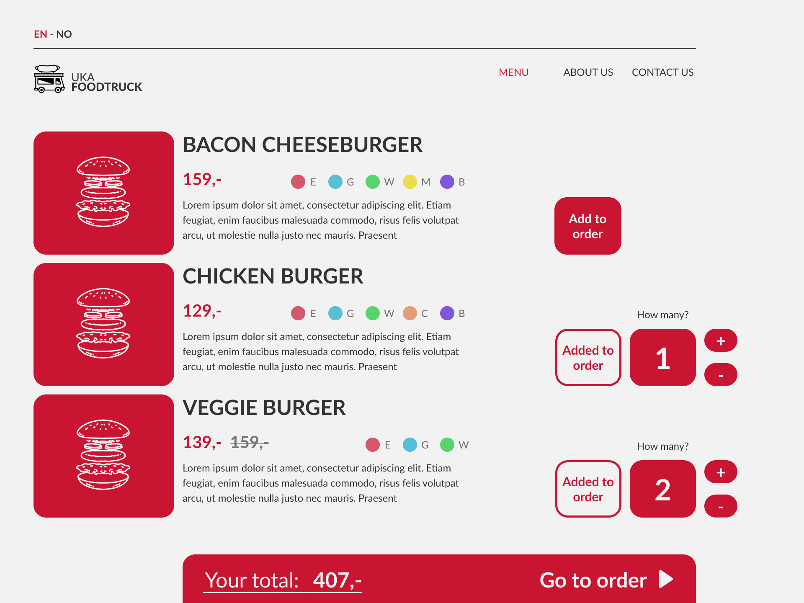
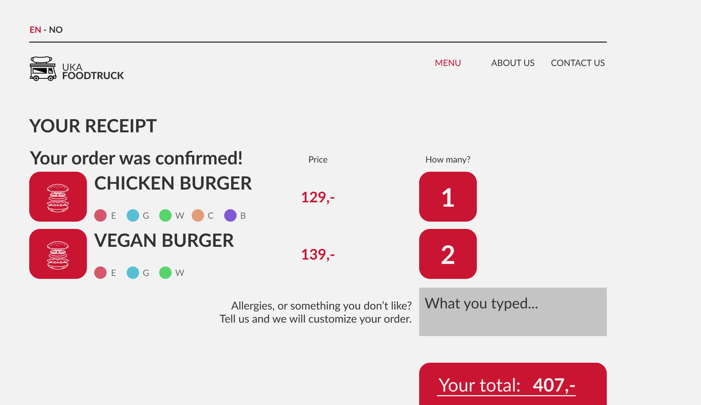

Purpose, goals, and audience
To give the food truck better visibility and better availability, the boss of the food truck requested a simple,
yet good-looking, website to be made. The website should be able to show where the food truck is, its opening
hours, as well as showing the menu and enable the customers to order their food through it.
The website's typical user will be students attending events during UKA. The students will use the website to
find a map of the venues where UKAs events are being held and where the food truck is placed. They will also
find the menu, place orders and find an overview of the opening hours. Since many of the events sell a lot of
alcohol, the website should be simple to navigate and use for people who might be a bit intoxicated.
Navigation Structure
The navigation structure of the website for UKAs food truck can be described as clique, see figure below.
As shown in the figure, you can reach every page except the order page no matter where you are on the website.
The pages are accessible through a navbar on the top of the website. The order site is only reachable from the
menu site as it is a site to confirm your order.
This structure makes sense for our website because we have chosen to focus on an easy navigation.
We think the ability to reach every page with one click fits our users because they, as mention before, might be
a bit intoxicated, and some might click on the wrong buttons.

Page Layout and Appearance
Universal design decisions
The primary focus in the design of the website was to use a structured aesthetic to improve the user experience.
Therefore it was necessary to define a grid of guides, in which the elements would be organized.
A benefit of this is that the user experiences similarities in the layout of each page, and how elements are
placed in relation to each other, making it easy to understand its content.
The grid is composed of:
- Page width: 1920px (if otherwise, the margins and guides will be scaled proportionally)
- Left and right margin: 80px = 4,17%
- 10 vertical columns: 158px = 8,23%
- horizontal rows: 137px = 7,14%
- Vertical and horizontal Gutters: 20px = 1,04%

Many of the following aesthetic choices were made with readability in mind.
This is because we expect the website to be used mainly at night, and largely by intoxicated students.
Therefore it was important to make text and imagery clear and easy to follow.
Elements are justified to the left, to maintain readability and structure on every page.
Typography
We chose Lato as our main font for all typography.
This is a simple sans-serif font with high readability in all weights and sizes.
To create a visual hierarchy in the contents of the page, we focused on selecting contrasting font weights and
sizes, to make differentiating important information from non-important information easy.
We avoided font-weights below regular, as they lack readability when lines become too thin.
The weights we chose were regular, bold and black.
- Home page headline: Lato, Black, 100, color: black
- Headlines of menu items and other h1 elements: Lato, Bold, 50, color: Black
- Prices: Lato, Bold, 40, color: Red
- Paragraphs and supporting text-elements: Lato, Regular, 30, color: Black
- Menu text: Lato, Regular, 30, Upper Case, color: Black/Red
- Text on red background will follow the same setup, but with light-grey color.
This typography setup, combined with the grid-system makes the website coherent.
Color Scheme
- Light-grey: #f2f2f2
- Black: #333333
- Red: #C91532
We went for a modern and simple color-scheme, to prioritize visibility and readability.
Our background color is a light grey; #f2f2f2.
For most graphic elements and text we used the black #333333.
We specifically used a non-pure black and white, to make the text easier on the eye.
Very high and very low light levels overstimulate the eyes when reading text, causing the eyes to work harder to
adapt to the brightness.
To give the website some character we chose to adapt some of the colors from the main UKA-website, as this food
truck is related to the festival.
To keep with the red theme in UKA, this became our accent color for elements and some text; #C91532.
This burst of color made it possible to highlight important elements such as price, as well as features of
interaction.
For instance, it is used to highlight which page you’re on, in the navbar.
Navbar position
We positioned the navbar in the top-right corner of the screen, at the end of a horizontal line outlining the
top of the screen.
It has enough margin to other elements to be easily visible.
Because the page is fairly limited in vertical length, we have currently decided to keep it permanently at the
top of the page.
However, we may make it stick to the top of the screen when scrolling, to simplify navigation among pages.
The navbar consists of the food truck logo, and the three page-links; menu, about us, and contact us.
The food truck logo is separated from the other elements, as it is in the top-left corner along the same
horizontal line.
It will act as a clickable home-button.
To make the website clear and prioritize the contents of the page, we have gone without a banner.
We have also refrained from using borders and shadows, to achieve a flat and simple design.
How universal design decisions fulfill goals of the website and its audience
As mentioned earlier, many of the design choices are made with the intended audience in mind.
Therefore structure, readability and calming visuals have been a priority.
A visual hierarchy, carefully choosing balanced colors, and using readable fonts make for a pleasing experience
of the website.
This will hopefully make it popular among festival-goers, leading to increased sales for the food truck.

Content
Home
The home page presents the food truck with the most relevant information. It will give a short introduction
to the user, describe the location and the opening hours of the food truck. Below this information there
will be a map showing the location. When the user clicks on the map it will open a new tab and take them to
Google Maps with the location selected for navigation. This will make it easy for the user to get an
instant location and a route to navigate to the food truck.
To the right of all this will be a dynamic display showing if the food truck is currently open or not. This
will change given the time of day, comparing the current time to the opening hours. Finally, a highlight
from the menu will be displayed with a small picture and its description. Clicking this section will take
the user over to the menu page.

Menu
This page will contain a list of all the items on the menu, what they are, what they look like, what they
contain and what they cost. The page will also contain buttons for each item to add or remove them from your
order and show how many you have selected. This page fulfills the goal of allowing users to place orders
through the website.
The unique design decisions for this page are going to be in regard to how we present the menu items. As
shown on the image below, we plan on having a small image for each item, with the name, price, a short
description and a list of allergy risks for this item to the side of the image. On lager devices the option
to add and remove items from the order will be on the right-hand side of the item details, while on smaller
devices this will be below.

Order confirmation
This page will contain a simplified list of the selected items, with the selected amount and price. The page
will also contain buttons for each item to increase or decrease the amount of them for your order as well as
a field to insert your name and potentially add a comment to the order.
As shown on the image the simplified list will contain a smaller image, the name of the item, allergies and
price. For a cohesive design we will use the same buttons to increase or decrease the amount of each item.
The two textfields will be fairly basic, with a short description for the input we want in each field and
the field for the name being smaller than for the comment.

Receipt
This page will contain the same simplified list of the selected items, however the buttons to increase or
decrease the amount of each item will of course not be present as this page shows the order that was
completed. The comment sent on the order confirmation page will also be shown.

About Us
The about page will contain information about the Food Truck of UKA-21. This information will be displayed
in a reader friendly manner, with multiple paragraphs and padding on the sides. Questions to the side of the
paragraphs will indicate what information is given. Pictures displaying the food truck and its employees
will be displayed side by side in a small format as seen on the figure below. When the user clicks on the
images the image will become larger and take up most of the screen, dimming the rest of the page in the
background.

Contact us
The contact us page will contain two distinct parts. The first one is a form for giving feedback to the food
truck. Here, users will fill in their information and write what the feedback is about and finally their
message. We will check that all the fields are filled out before the user then can submit the form.
The second part is a map displaying the location of the food truck at a given scale. When the user clicks on
the map it will open a new tab and take them to Google Maps with the location selected for navigation. This
will make it easy for the user to get an instant location and a route to navigate to the food truck.